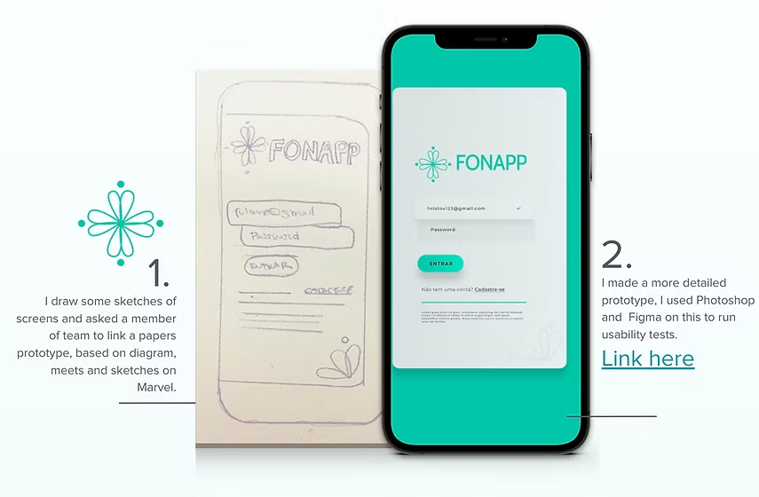

Juliana Miranda
Graphic Designer | Ui/Ux, Product Designer


I’m a designer with more than 15 years of experience creating graphic design, digital experiences, and visual systems that connect brands, products, and people.


How design fundaments could help us enhance the quality using shot time?
I'll list a few chances here:
Visual Consistency - they way shapes like icons are drawn will impact on unity sense of the icons group.
Sizes, pixels on stroke, color, angles on curves, distance between parts of a draw, putting
together as many common choices as possible,
we can see unity between shapes.
If we see unity we perceive as part of a group, giving visual
pleasure and reducing noises on the understanding of each part of the navigation.
From brand identity to UI/UX and motion, I guided students through the complete visual development of apps and games, turning classroom projects into hands-on design experiences.


